Rendering¶
Contents
Rendering is the process where the edited clips are saved into a single complete video clip. During the rendering process the video can be compressed and converted to a number of different video formats (aka codecs).
The rendering dialog is brought up from the render button
from selecting in the Project Menu or by the Ctrl + Enter shortcut.
Rendering Dialog Ver 17.04¶
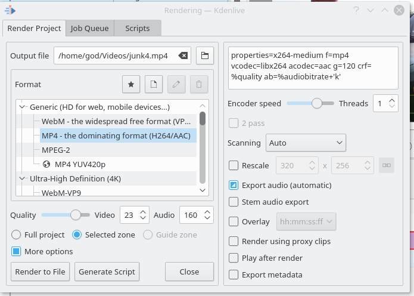Rendering Profile Categories¶
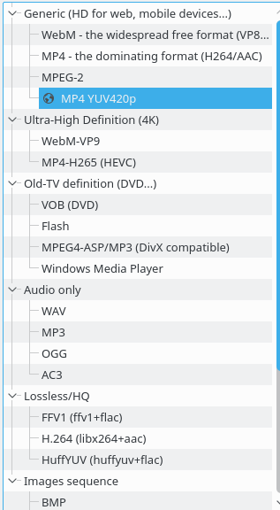Kdenlive* offers many different preset rendering profiles to choose from. The rendering profiles are grouped into categories. See picture Above.
File Rendering - earlier Versions¶
The following figures show the render dialog when the category is File Rendering. The first two figures show the layout of the dialog under ver 0.9.10 of Kdenlive and the third figure shows how the dialog appears in ver 0.9.8 of Kdenlive.
Version 0.9.10 of Kdenlive changes the render dialog significantly because it implements a method where you can choose to render the project with either a variable video bitrate (VBR) or a constant video bitrate (CBR)
Variable Bit Rate - earlier Versions¶
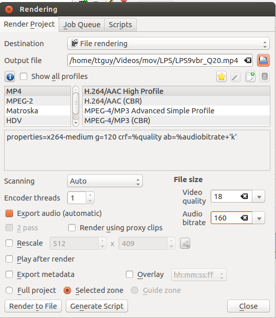When a variable bitrate profile is selected, the section displays a drop down for choosing the Video quality you want. This quality figure is a codec-dependent number representing the quality of the video that will be rendered. Generally, lower numbers mean higher quality video and larger file sizes (e.g. x264, MPEG2, VPx), but some codecs use opposite order (e.g. Theora). Profiles provided with Kdenlive offer these numbers ordered from best quality (almost lossless) to lower quality (still not degrading too much). The exact file size that is produced can not be predicted when using the VBR method. The idea behind this is that you specify a certain quality of video that you want through the entire video and the encoding optimizes bitrate to give you that constant quality, lowering data size for low action scenes and using more bits for high action scenes.
Example: 1min 55 seconds of 720 x 576 H.264 iPhone footage rendered at quality 15 with the H.264/AAC High Profile would produce a file size of 186 Mb. Whereas rendering the same footage at quality quality 20 produced an 83Mb file.
Constant Bit Rate - earlier Versions¶
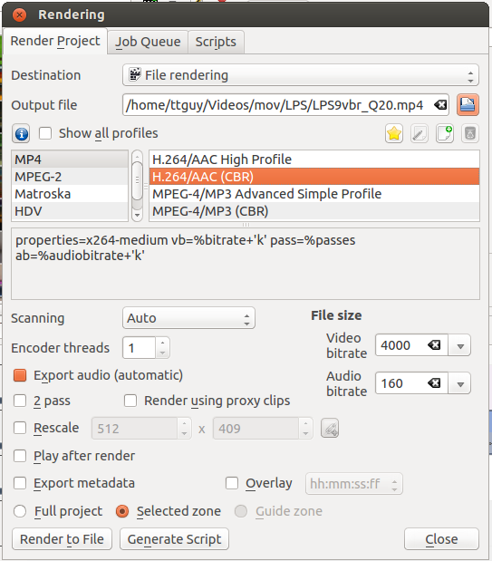When a constant bitrate (CBR) profile is selected, the section displays a drop down for choosing the Video bitrate you want. This is similar to the version <=0.9.8 behaviour of Kdenlive. You select the video bitrate you want and the video is encoded at that video bitrate across its entire length.
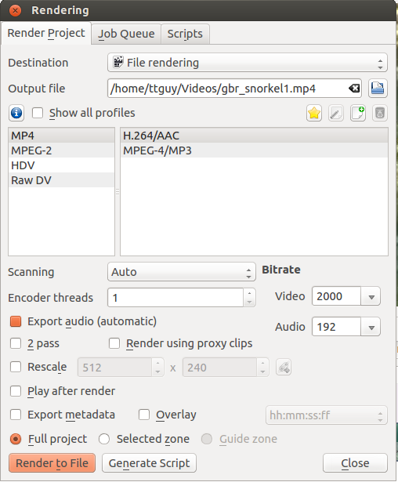DVD Rendering - earlier Versions¶
DVD Rendering produces files that are compatible with DVD authoring software. MPEG2 files created from render profiles are less likely to be compatible with DVD software. For quality settings see render and render. For DVD VBR lower setting number means better quality.
Note that this rendering does not create a DVD file system. It merely creates DVD-compatible MPEG2 files that can be used by DVD authoring software. If you check the check box, then the DVD Wizard will open and you can use it to create a DVD file system (in .ISO format). The DVD Wizard is also available from the File Menu.
enables chapter markings on your DVD. Chapters work with the “next” and “previous” buttons on the DVD player and can populate scene selection menus. In order to create chapters this way you need to have marked chapters with guides on timeline. DVD wizard enables marking of chapters also during DVD creation step.
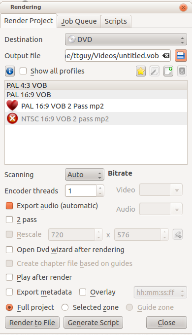Websites - earlier Versions¶
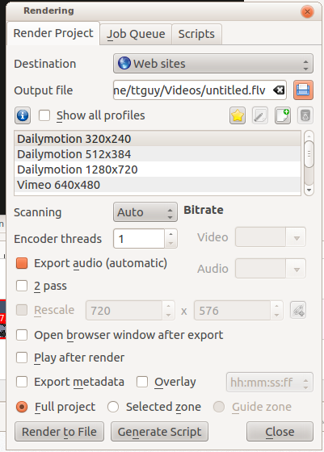Mobile Devices - earlier Versions¶
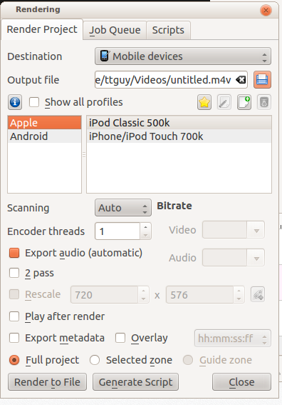Create Custom Render Profiles¶
You can create your own custom render profiles by clicking the button highlighted in the screenshot below.
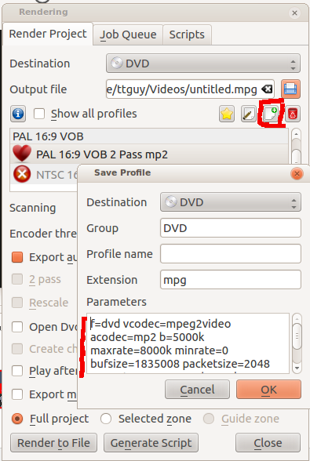{kind=link}
This will open the Save Profile dialog (also shown in the above screenshot) and the section will be filled in with the render parameters of the profile that you had selected when you clicked the button. You can edit values in the parameters and save your own custom render profile.
{kind=link}
The parameters in the rendering profile are melt parameters. For an explanation of their meaning, check the melt documentation or type melt -help in a command prompt.
The above screenshot shows the Save Profile dialog as it appears in version <=0.9.4 of Kdenlive.
In version >=0.9.5 there is an improved version of the Save Profile dialog (see below) which allows you to customize the bitrates that are offered in the render profile.
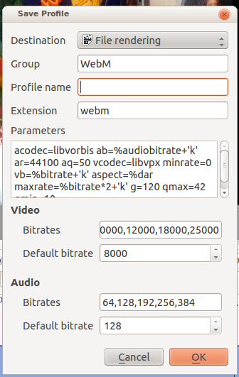{kind=link}
See also Render Profile Parameters
Rendering In Batch mode¶
If you have a lot of rendering jobs to do, you can use Kdenlive to create rendering scripts which you can accumulate and then execute in batch mode overnight. See Rendering Using Guides and Rendering Scripts.
Alternatively, once you have submitted a rendering job on a project and it is up and running in the Job Queue, you can drag the render window out of the way and edit the project some more or load a new project and render that one too. The second render job submitted will go into the Job Queue. Editing the project after a render job is submitted will not change the settings on that job.
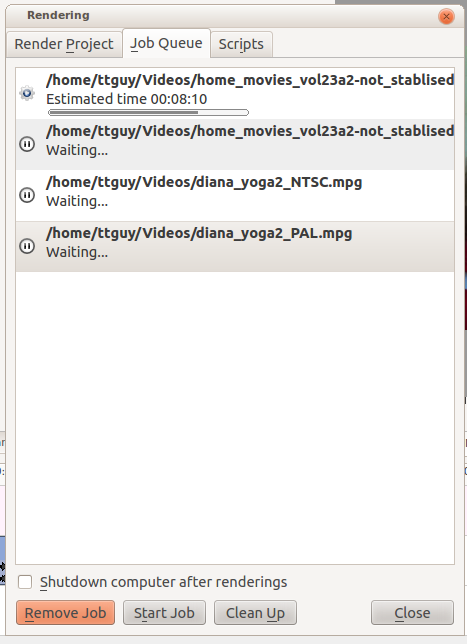{kind=link}
Rendering Using the Guide Zone Option¶
This makes use of guides to define a region of the project that is to be rendered. See Rendering Using Guides and Rendering Scripts.
Rendering Using the Selected Zone Option¶
If you select the radio button from the bottom of the render dialog, Kdenlive will only render that portion of the project which has a selected zone created for it. See Monitors
Render Overlay¶
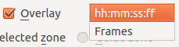This option overlays a time code or frame count over the rendered video. This will put the overlay over the entire rendered project. Alternatively you can use the dynamic_text effect to overlay selected regions of the video.
{kind=link}
Export Metadata¶
Check this to have the metadata which has been entered under Project Settings Dialog placed into the metadata of the rendered file.
In version 0.9.6 for Linux, you have to double-click the data area of a metadata field line to make the field available for input.
This image shows metadata settings for a project:
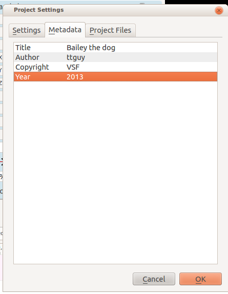And this is the metadata on the resulting clip (rendered with checked).
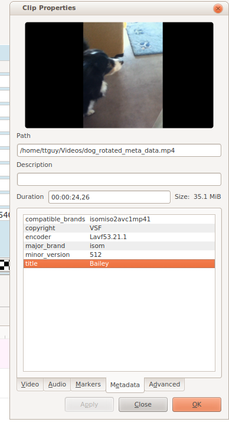$ ffprobe dog_rotated_meta_data.mp4
Metadata:
major_brand : isom
minor_version : 512
compatible_brands: isomiso2avc1mp41
title : Bailey
encoder : Lavf53.21.1
copyright : VSF
This reveals a bug in ver 0.9.4 of Kdenlive - the full title is not placed in the metadata - it is truncated at the first space. This has been fixed in 0.9.5 of Kdenlive as Mantis number 2996.
Export Audio Checkbox¶
This is an unusual one. Instead of a normal on/off checkbox toggle, the checkbox cycles among three choices.
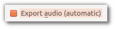 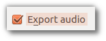 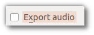As if that weren’t confusing enough, the Export audio (automatic) option may appear different depending on your combination of distribution, desktop environment and theme. See three examples below:
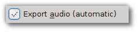 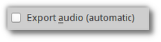Regardless of how the checkbox on the Export audio (automatic) option may appear on your installation, rest assured that when that option is showing, it is enabled.
So what do the three options mean?
Export audio (automatic)* means detect if an audio track is present and write the audio track if found
Export audio*, when checked, means write an audio track in the rendered file even if there is no audio track to write.
Export audio*, when unchecked, means do not write an audio track in the rendered file.
The difference in behavior between enabling Export audio versus Export audio (automatic) can be seen in the situation where you have a video on the timeline but there is no audio track on the timeline and the video in the video track also does not have an audio track. An example of such a situation is shown in the screenshot below.
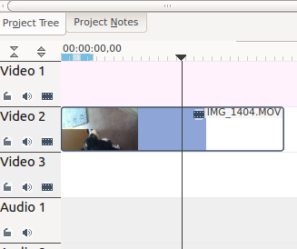In this situation, if you render with Export audio (automatic), the rendered file will not have an audio track (Result 1 on screenshot below). But if you render with Export Audio checked, then the rendered file will contain an audio track – the track will however be empty (Result 2 on screenshot below).
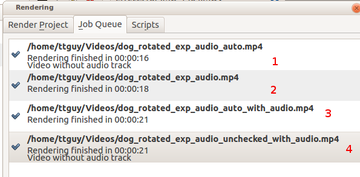FFprobe on file generated from an audio-less track using Export audio (automatic). Note only one stream – Stream #0.0 – a video stream. Kdenlive automatically detected there was not an audio track and so it did not write one.
$ ffprobe dog_rotated_exp_audio_auto.mp4
Metadata:
major_brand : isom
minor_version : 512
compatible_brands: isomiso2avc1mp41
encoder : Lavf53.21.1
Duration: 00:00:03.62, start: 0.000000, bitrate: 12592 kb/s
Stream #0.0(und): Video: h264 (High), yuv420p, 1280x720 [PAR 1:1 DAR 16:9], 12587 kb/s, 27.83 fps, 27.83 tbr, 30k tbn, 55.66 tbc
FFprobe on file generated from an audio-less track using Export audio checked. Note two streams – Stream #0.0 and Stream #0.1 – the latter being an aac audio track. We forced Kdenlive to write an audio track even though there was not any source audio to write.
$ ffprobe dog_rotated_exp_audio.mp4
Metadata:
major_brand : isom
minor_version : 512
compatible_brands: isomiso2avc1mp41
encoder : Lavf53.21.1
Duration: 00:00:03.62, start: 0.000000, bitrate: 12598 kb/s
Stream #0.0(und): Video: h264 (High), yuv420p, 1280x720 [PAR 1:1 DAR 16:9], 12587 kb/s, 27.83 fps, 27.83 tbr, 30k tbn, 55.66 tbc
Stream #0.1(und): Audio: aac, 48000 Hz, stereo, s16, 2 kb/s
In cases where there is an audio track …
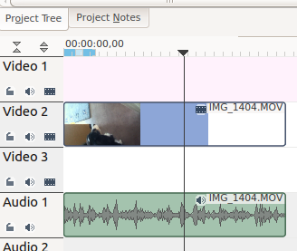Rendering with Export audio unchecked will produce a file with no audio track – result 4 in the screenshot above. Rendering with Export audio (automatic) (result 3 in the screenshot above) or with Export audio checked will produce files with Audio tracks.
Encoder Threads¶
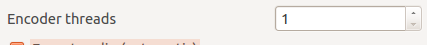Determines the value of Encoding threads passed to melt. For encoding to certain codecs, namely MPEG-2, MPEG-4, H.264, and VP8, kdenlive can use more than one thread and thus make use of multiple cores. Increase this number to take advantage of this feature on multi-core machines. See melt doco - threads and melt FAQ on multi-threading.
Scanning Dropdown¶
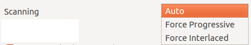This option controls the frame scanning setting the rendered file will have. Options are Force Progressive, Force Interlaced and Auto.
Auto* causes the rendered file to take the scanning settings that are defined in the Project Settings Dialog. Use the other options to override the setting defined in the project settings.